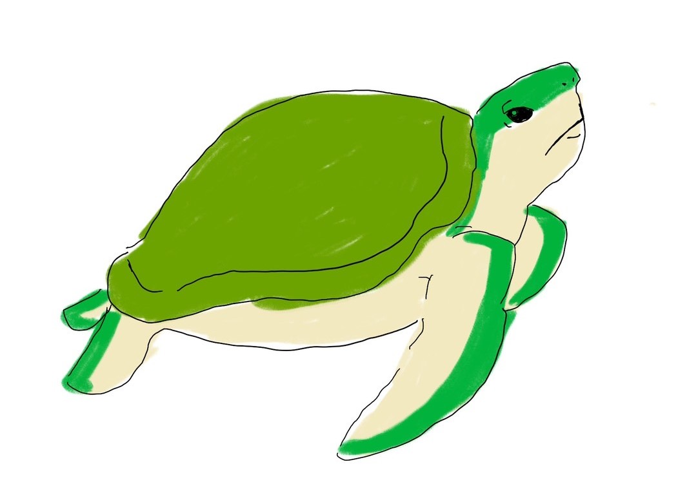
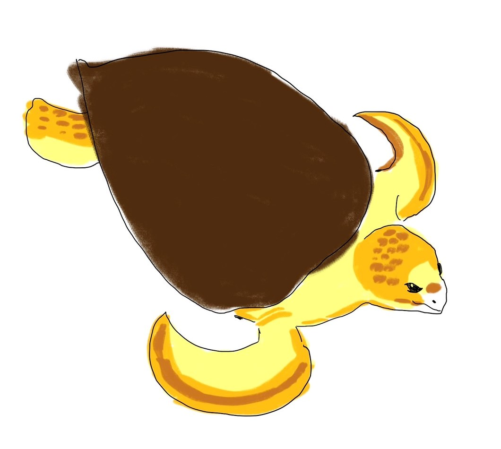

革龜（學名：Dermochelys coriacea），也稱為棱皮龜，是龜鳖目中體型盡大該動物，也是所有海龜中盡大該，盡大尾可達3米，龜殼長2米餘；體重可達1噸。棱皮龜的龜甲並非純粹的骨頭，全部軟化成膠質，硬度不如一般烏龜，因此導致很多肉食海洋動物（大白鯊、虎鯨等）會以牠為食。 更多資訊.
綠蠵龜 绿蠵龜（學名：Chelonia mydas、英文：green sea turtle），又稱青海龜、石龜（臺灣話：tsio̍h-ku）、龜鼊（臺灣話：ku-piah）、龜蟞（臺灣話：ku-phi̍ah），是海洋中的爬行類動物，是海龜屬下的唯一一种。一生中大多的時間都在海中生活，但演化過程中仍然保留了部分祖先的生活方式，所以必須回到出生地上產卵，繁育後代，形成了一種較獨特的生活習性。 更多資訊.
赤蠵龜赤蠵龜（學名：Caretta caretta），又稱為紅海龜、紅蠵龜、日頭龜、八卦龜、火龜，是海龜科蠵龜屬下的唯一一个種，分布於世界各地。赤蠵龜能生長的最大長度平均为90cm，但是有發現超過280cm的標本。成年赤蠵龜重約135kg，最重曾發現過超過450kg的標本。皮膚顏色從黃色到棕色，殼通常是紅棕色。在成年之前沒有太大的性別差異，成年海龜性別最明顯的差異是公海龜有著比母海龜粗的尾巴，以及較短的胸甲。 更多資訊.